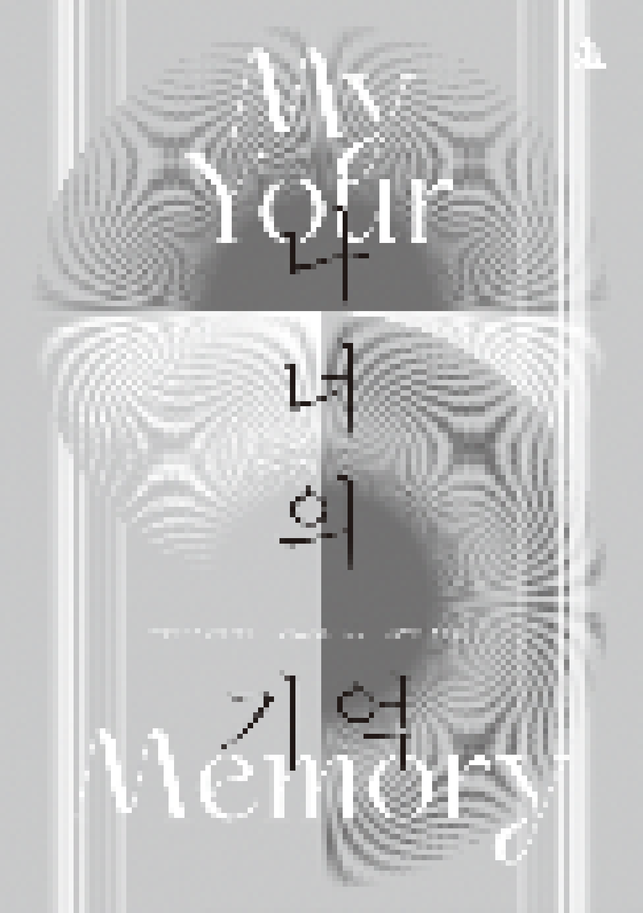

> title
나너의 기억
> content
«나너의 기억»은 급변하는 사회 시스템 속에서 우리는 무엇을, 어떻게 기억할 것인지에 대한 질문을 던지는 전시다.
돌이켜보면 우리는 너무 빠르게 변해 왔다. 예컨대 21세기를 기점으로 디지털 기술 발전이 가속화되면서 과거에는 상상하지도 못할 만큼 빠른 속도로, 멀리 떨어진 곳에서 수많은
업무를 처리할 수 있게 되었다. 이러한 변화는 모든 인류에게 혁신적인 편리함을 가져다줄 것으로 여겨졌지만, 오히려 새로운 디지털 시스템에 민첩하게 적응하지 못하는 이는 도태되고 마는
아이러니를 만들었다.
최근에는 바이러스로 인해 세계가 일순간에 멈춰 버렸다. 우리는 바이러스와 수차례 싸워 왔지만, 이번
바이러스로 인간과 시스템의 한계가 드러났고 전 인류가 당혹감을 감추지 못했다. 국가 정책은 하루가 다르게
바뀌었고,
이전과 달리 개인의 일상에 밀접한 영향을 미치는 사회 시스템에 빠르게 적응하느라 우리는 그동안 숨 가쁘게 달려왔다.
어제의 정보와 삶의 방식이 오늘은 용인되지 않는 시대를 살아가는 우리는 무엇을 삶의 기준으로 삼아야 하는가. 너무 빠르게 변화하는 시대 속에서 삶의 모습을 스스로 반추하고,
사고하는 법을 잊고 있었던 것은 아닐까. 어쩌면 이 혼란과 격동의 시대야말로 우리가 스스로를 잠시 멈춰 세우고 무엇을 기억할 것이냐고 자문해야 하는 시점이 아닐까.
전시는 자신과 타자의 기억이 혼재되고 중첩되는 현상을 들여다보면서 개인의 기억을 점유하는 주체는 누구이고, 어떤 기준에 따라 정보가 기억되고 망각되는지에 대해 고찰하며
시작된다. 나아가 과거의 수많은 정보가 선택·편집되어 형성된 현재의 기억은 어떤 방식으로 드러나고 있으며, 현재의 발자취를 바탕으로 형성될 미래의 기억은 어떤 모습일지에 대해 질문한다.
현재의 우리는 어떤 정보를 남기고 있는지, 미래 세대는 남겨진 정보를 어떠한 방식으로 재구성하여 지금의 우리를 기억하게 될지 상상해 봄으로써 우리가 살아가고 있는 사회의 모습과 삶의
방식을 성찰해 볼 수 있는 기회가 되기를 바란다.
